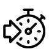
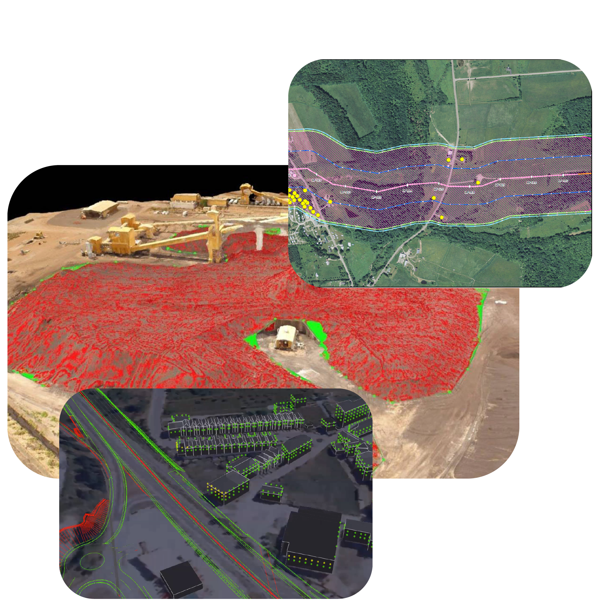
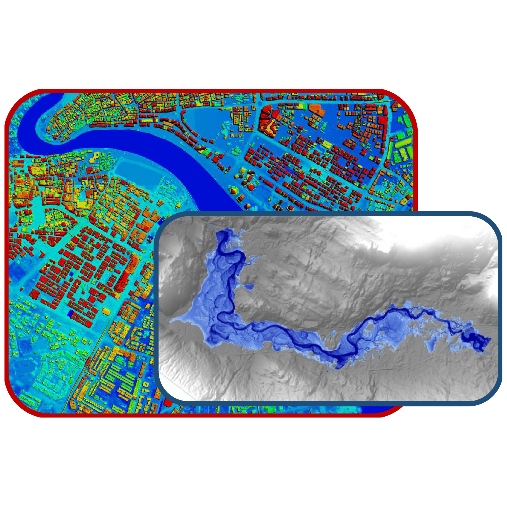
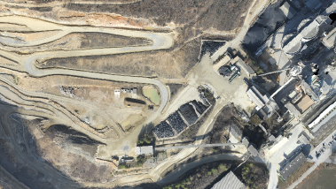
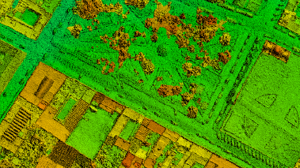
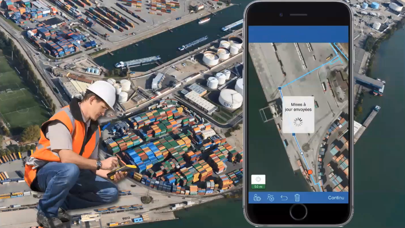
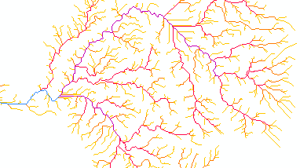
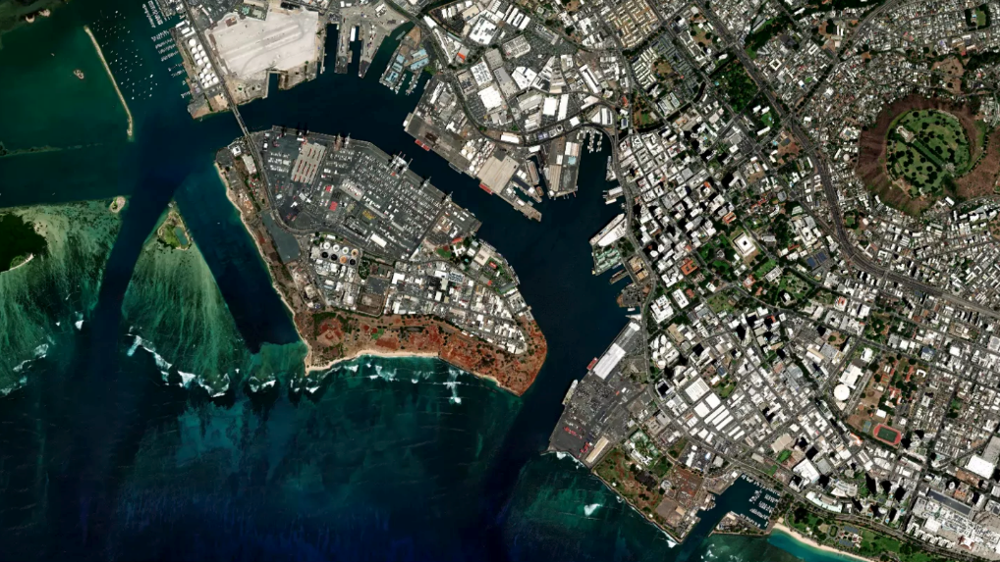
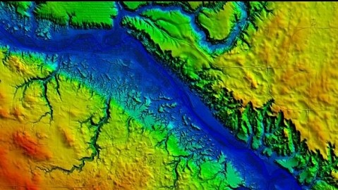
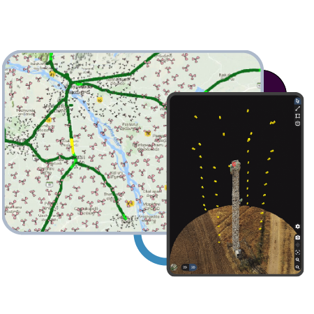

Analiza escenarios de forma digital para agilizar tus procesos
Evalúa con análisis geoespacial diferentes factores que puedan afectar tus proyectos
Sigue avances de proyectos mediante imágenes y plataformas geográficas
Realiza estudios multicriterio mediante información geográfica para tomar las mejores decisiones
En Geocartos® somos pioneros en la implementación de tecnología geoespacial para elaboración de modelado de información de construcción (BIM)



Usar imágenes para el seguimiento de proyecto permite identificar detección de cambios, supervisión de obra de manera remota, periodica y sin importa si está en zonas con nubosidad.

El uso de los modelos digitales de elevación con el objeto de representar en forma fidedigna el relieve terrestre o de edificaciones para integración BIM. Tiene un impacto relevante en los resultados finales y en la calidad del producto generado.

Manten actualizado tu inventarios desde una visita a campo, revisa personalmente la infraestructura actual.
En Geocartos® te ayudamos a llevar una gestión del avance de la obra desde los GIS.

Modelar comportamiento hidrogeológico permite conocer llanuras de inundación para la predicción de los peligros por inundación fluvial y planificar acciones de mitigación.

La infraestructura verde es un método para abordar retos climáticos y urbanos construyendo con la naturaleza. Es una forma de ver la tierra que nos rodea con un enfoque más ecológico y holístico.

Los DEM ofrecen una gran cantidad de información, con la que podrás procesar, modelar, crear simulaciones, planificar, conocer el terreno, entre otras más aplicaciones.
